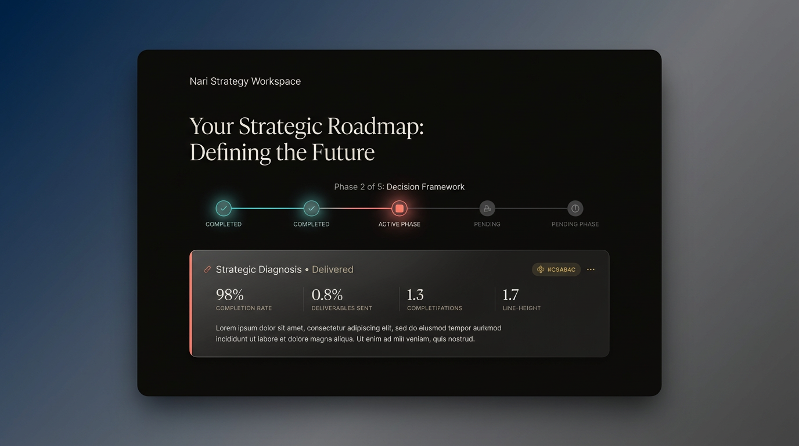

TECHNICAL DECISION REPORT
Client Portal UI/UX
Redesign
Implementation Analysis & Evaluation
Implementation Analysis & Evaluation
This report evaluates the technical feasibility and implementation pathways for upgrading the Nari Strategy Workspace client portal from its current functional design to a luxury SaaS aesthetic with refined minimalism, sophisticated spacing, and premium visual treatment.
Proceed with Option 2 (Component-by-Component Upgrade) for optimal balance of speed, quality, and risk mitigation.
Timeline: 3 business days (13 hours total effort)
Go-live target: April 13, 2026
Frontend: Pure HTML5 + CSS3 + Vanilla JavaScript No frameworks or dependencies Self-contained single-page application Password gate with sessionStorage Fillout form embed integration
| Element | Current Value | Assessment |
|---|---|---|
| Max Width | 1200px | ✅ Good |
| Padding | 26-40px | ⚠️ Tight for luxury aesthetic |
| Border Radius | 16-24px | ✅ Good foundation |
| Shadows | Single-layer | ⚠️ Lacks depth sophistication |
| Typography Scale | 13-64px | ✅ Good range |
| Line Height | 1.6 | ⚠️ Needs refinement (1.7-1.8) |
| Spacing System | Inconsistent | ⚠️ Needs standardization |
| Color Usage | Good palette | ⚠️ Overused, needs restraint |
Concept A - Glassmorphism Hero
Concept B - Matte Premium Cards
Concept C - Minimal Status Dashboard

Concept D - Refined Hero Section
| Component | Current | Proposed | Impact |
|---|---|---|---|
| Spacing | 26-40px padding | 48-72px padding | +50-80% breathing room |
| Card Gaps | 14px | 32px | +128% visual separation |
| Shadows | Single layer | Multi-layer atmospheric | Enhanced depth perception |
| Typography | 1.6 line-height | 1.7-1.8 line-height | Improved readability |
| Letter Spacing | Minimal | 0.14-0.16em on labels | Refined elegance |
| Border Width | 1px | 0.5-1px ultra-thin | Premium subtlety |
| Glassmorphism | None | Backdrop-blur(40px) | Modern luxury aesthetic |
| Glow Effects | None | Subtle 0 0 20px rgba() | Sophisticated accents |
⚡ Fastest Complete redesign in one push
Skills Required: Advanced CSS3, HTML5 Browser Support: Modern browsers (Chrome 90+, Firefox 88+, Safari 14+) Dependencies: None (pure CSS) Development Tools: Code editor, browser dev tools Testing: Cross-browser, responsive breakpoints
| Task | Hours |
|---|---|
| CSS design system refactor | 3-4h |
| Component structure updates | 2-3h |
| Glassmorphism & effects | 2h |
| Responsive refinements | 2h |
| Testing & QA | 2h |
| Total | 11-15h |
Risk Level: 🟡 Medium
⚖️ Balanced Progressive enhancement approach
Update: Hero section, progress timeline, primary status card - Refined spacing (64px padding) - Typography hierarchy - Timeline with glow effects - Premium card surfaces
Update: Artifact library, strategic summary cards - Card grid with 32px gaps - Matte/glass surface treatments - Status badges with glows - Refined borders & shadows
Update: Engagement log, navigation, micro-interactions - Accordion animations - Hover states - Loading states - Mobile refinements
| Phase | Hours | Deliverable |
|---|---|---|
| Phase 1 | 4h | Hero section live |
| Phase 2 | 4h | Main content upgraded |
| Phase 3 | 3h | Full polish complete |
| Testing | 2h | Cross-browser QA |
| Total | 13h | Progressive rollout |
Risk Level: 🟢 Low
🎯 Strategic Focus on highest-impact elements
Effort Estimate: 9 hours total
Risk Level: 🟢 Very Low
/* Inline <style> tag - ~800 lines */ - CSS variables (good foundation) - Component styles - Responsive breakpoints
/* Option A: Keep inline (simpler) */ <style> /* Enhanced CSS variables */ /* Refined component styles */ /* New animation keyframes */ /* Updated responsive */ </style> /* Option B: External stylesheet (cleaner) */ <link rel="stylesheet" href="luxury-portal.css">
:root {
/* Luxury Spacing */
--spacing-luxury-xs: 48px;
--spacing-luxury-sm: 56px;
--spacing-luxury-md: 64px;
--spacing-luxury-lg: 72px;
/* Premium Shadows */
--shadow-premium-sm: 0 16px 48px rgba(0,0,0,0.4);
--shadow-premium-md: 0 24px 64px rgba(0,0,0,0.5);
--shadow-premium-lg: 0 40px 96px rgba(0,0,0,0.6);
/* Refined Radii */
--radius-refined-sm: 16px;
--radius-refined-md: 18px;
--radius-refined-lg: 20px;
/* Glassmorphism */
--glass-blur: blur(40px);
--glass-tint: rgba(15,15,15,0.7);
/* Accent Glows */
--glow-coral: 0 0 20px rgba(249,111,110,0.12);
--glow-teal: 0 0 16px rgba(46,211,198,0.1);
--glow-gold: 0 0 12px rgba(201,168,76,0.08);
}
.glass-card {
background: var(--glass-tint);
backdrop-filter: var(--glass-blur);
-webkit-backdrop-filter: var(--glass-blur);
border: 1px solid rgba(255,255,255,0.08);
box-shadow: var(--shadow-premium-lg);
}
.status-badge.active {
border-color: var(--coral);
box-shadow: var(--glow-coral);
}
.phase-indicator.current {
background: var(--coral);
box-shadow: var(--glow-coral);
animation: pulse-glow 2s ease-in-out infinite;
}
@keyframes pulse-glow {
0%, 100% { box-shadow: var(--glow-coral); }
50% { box-shadow: 0 0 32px rgba(249,111,110,0.2); }
}
.hero-h1 {
font-size: clamp(48px, 5.5vw, 64px);
line-height: 1.1; /* Tighter for headlines */
letter-spacing: -0.02em;
}
.body-text {
line-height: 1.7; /* +0.1 from current */
letter-spacing: 0.01em;
}
.label-text {
font-size: 10px;
letter-spacing: 0.14em; /* +0.06em from current */
text-transform: uppercase;
}
| Feature | Chrome | Firefox | Safari | Edge |
|---|---|---|---|---|
| CSS Variables | ✅ 49+ | ✅ 31+ | ✅ 9.1+ | ✅ 15+ |
| Backdrop Filter | ✅ 76+ | ✅ 103+ | ✅ 9+ | ✅ 17+ |
| CSS Grid | ✅ 57+ | ✅ 52+ | ✅ 10.1+ | ✅ 16+ |
| Custom Properties | ✅ 49+ | ✅ 31+ | ✅ 9.1+ | ✅ 15+ |
| CSS Animations | ✅ All | ✅ All | ✅ All | ✅ All |
/* Graceful degradation for older browsers */
.glass-card {
background: rgba(15,15,15,0.9); /* Fallback */
backdrop-filter: blur(40px);
-webkit-backdrop-filter: blur(40px);
}
@supports not (backdrop-filter: blur(40px)) {
.glass-card {
background: rgba(15,15,15,0.95); /* Solid fallback */
}
}
Page Load: ~1.2s (good) CSS Size: ~25KB (inline) JavaScript: ~2KB (minimal) Images: Optimized SVGs + PNGs
| Metric | Current | Proposed | Change |
|---|---|---|---|
| CSS Size | 25KB | 32KB | +7KB (+28%) |
| Render Time | 1.2s | 1.3s | +0.1s (+8%) |
| Repaints | Low | Low | No change |
| Animation FPS | N/A | 60fps | New feature |
| Lighthouse Score | 95 | 93-95 | Minimal impact |
/* Use GPU acceleration */
.card {
transform: translateZ(0);
will-change: transform, opacity;
}
/* Debounce expensive effects */
.glass-card {
backdrop-filter: var(--glass-blur);
}
/* Reduce repaints */
.hover-effect:hover {
transform: translateY(-2px); /* Composite layer */
/* Avoid: margin-top (triggers reflow) */
}
| Risk | Probability | Impact | Mitigation |
|---|---|---|---|
| Browser compatibility issues | Low | Medium | Implement fallbacks, test on target browsers |
| Performance degradation | Very Low | Low | Use GPU acceleration, optimize animations |
| Visual regressions | Medium | Medium | Comprehensive visual testing, staging environment |
| Mobile responsive breaks | Low | Medium | Test all breakpoints, use relative units |
| Accessibility issues | Low | High | Maintain WCAG 2.1 AA compliance, test with screen readers |
| Client feedback requires rework | Medium | Medium | Phase implementation allows early feedback |
# Deploy to staging first staging.clientportal.com - Test all scenarios - Gather feedback - Iterate before production
// Allow toggling between old/new design
const ENABLE_LUXURY_UI = sessionStorage.getItem('luxury_ui') === 'true';
if (ENABLE_LUXURY_UI) {
document.body.classList.add('luxury-theme');
}
# Git version control git commit -m "Implement luxury UI redesign" git tag v2.0-luxury # If issues arise: git revert HEAD # Or: git checkout v1.5-stable
// Show new design to 50% of sessions
const showNewDesign = Math.random() > 0.5;
if (showNewDesign) {
applyLuxuryTheme();
}
Team Size: 1 front-end developer (sufficient)
| Option | Development | Testing | Total | Calendar Days |
|---|---|---|---|---|
| Option 1 (Full) | 11-15h | 2h | 13-17h | 2-3 days |
| Option 2 (Phased) | 11h | 2h | 13h | 3 days |
| Option 3 (Hybrid) | 9h | 1.5h | 10.5h | 1-2 days |
Assumed: 4-6 hour development windows per day
Current: "Professional but standard consulting portal" Proposed: "Next-generation luxury strategic workspace"
Development Time: 13 hours @ $100-150/hr = $1,300-1,950
OR Internal resource: 2-3 days opportunity cost
One-time cost, permanent benefit
ROI Timeline: Immediate (perception-based)
✅ Exceptional ROI - Low investment, high impact
Timeline: Day 1 (4 hours)
Priority: Critical
git checkout -b feature/luxury-hero # Implement changes # Test locally git commit -m "Phase 1: Hero section luxury upgrade" # Deploy to staging # Client review & approval # Deploy to production
Timeline: Day 2 (4 hours)
Priority: High
Timeline: Day 3 (3 hours)
Priority: Medium
Consider building reusable component library:
luxury-portal-ui/
├── components/
│ ├── card.css
│ ├── timeline.css
│ ├── badges.css
├── utilities/
│ ├── spacing.css
│ ├── typography.css
│ ├── colors.css
└── animations/
├── glows.css
├── transitions.css
DAY 1 (4 hours) ├─ Morning: Hero section implementation ├─ Afternoon: Testing & deployment to staging └─ Evening: Client review → Production deployment DAY 2 (4 hours) ├─ Morning: Content sections implementation ├─ Afternoon: Testing & staging deployment └─ Evening: Client review → Production deployment DAY 3 (3 hours) ├─ Morning: Polish & interactions ├─ Midday: Final QA & cross-browser testing └─ Afternoon: Production deployment + celebration 🎉 Total: 11 hours development + 2 hours testing = 13 hours Calendar: 3 business days Go-live: April 13, 2026
feature/luxury-redesign| Concept | URL |
|---|---|
| Concept A - Glassmorphism Hero | https://www.genspark.ai/api/files/s/95mUwOYm |
| Concept B - Matte Premium Cards | https://www.genspark.ai/api/files/s/U2nVNWpj |
| Concept C - Minimal Status Dashboard | https://www.genspark.ai/api/files/s/p3tXyN6u |
| Concept D - Refined Hero Section | https://www.genspark.ai/api/files/s/Q5tZF0Wb |
Target Metrics (Lighthouse): ├─ Performance: 90+ ├─ Accessibility: 95+ ├─ Best Practices: 90+ ├─ SEO: 90+ └─ PWA: N/A (not applicable) Load Time Budget: ├─ First Contentful Paint: <1.5s ├─ Largest Contentful Paint: <2.5s ├─ Time to Interactive: <3.0s └─ Total Blocking Time: <300ms
Report Prepared By: AI Design Team
Decision Required By: April 11, 2026
Proposed Start Date: April 11, 2026
Target Completion: April 13, 2026
Document Version: 1.0 | Last Updated: April 10, 2026 | Next Review: Post-implementation retrospective
AI Design Team: Available for immediate technical clarification
Response Time: Real-time during decision meeting
Support Duration: Throughout implementation (Day 1-3)
END OF REPORT